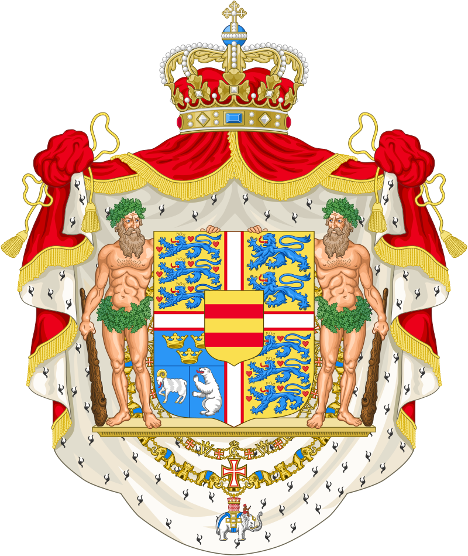
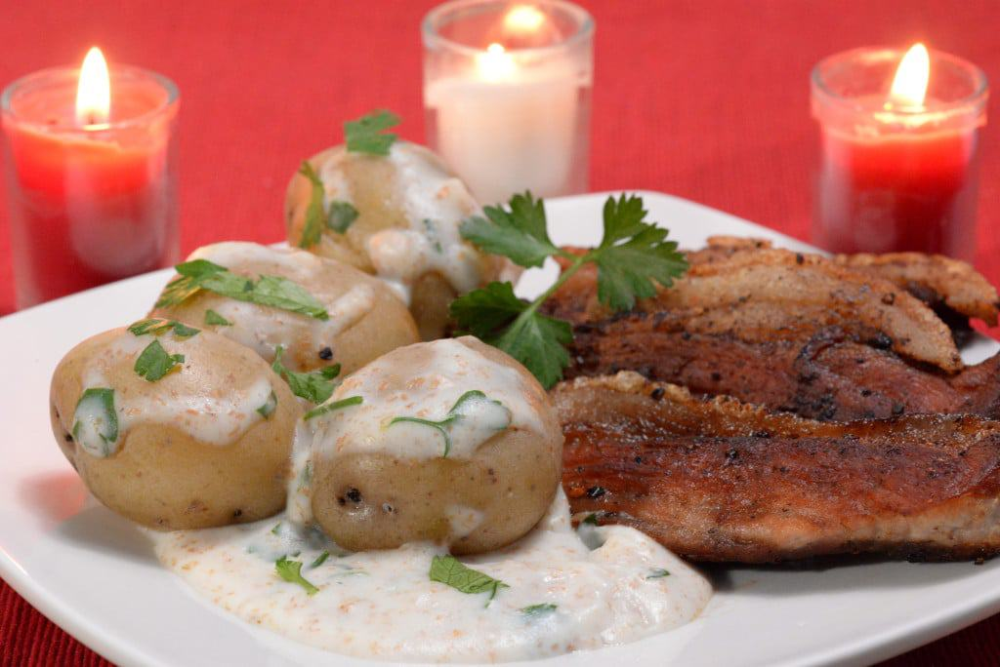

Stegt Flæsk


This dish encompasses pork belly alongside potatoes and parsley white sauce. It's a classic among many Danes and has been voted on as the country's national dish in 2014!
Ingredients
- Porl Belly, in slices: 1 1/2 Ibs.
- Potatoes: 2 Ibs
- Butter: 1/3 cup
- Wheat Flour: 3 tablespoons
- Milk: 2 cups
- Parsley, chopped: 2 handfuls
- Salt
- Pepper
Steps
- Prepare the potatoes. Peel the potatoes unless you prefer your potatoes with skin. Put them in a pot and cover them with water, add salt and put on stove. They need to boil for 15-20 minutes.
- Meanwhile, prepare the pork. Dry the slices (they should have a thickness of 1/4 in.) and season them with salt and pepper. Then fry them for one minute on each side on moderate heat, lower the heat and keep turning the slices until they are golden and crispy. Put them on a piece of paper when they are done to drain a bit of fat. Keep them hot in your oven while you prepare the parsley sauce.
- Prepare the sauce. Melt the butter in a pot. Once it is melted, add the flour and stir until the butter and flour is a coherent mass. It shouldn't take long and make sure that it doesn't burn so and turn brown. This should be a white sauce, with sprinkles of green. Add a little bit of milk and stir. When the milk is mixed in and has reached the boiling point, stir for a few seconds and then repeat. Add milk stir, boil, stir. Repeat until the sauce has a consistency that you like.
- Add the parsley and season to taste with salt and pepper.